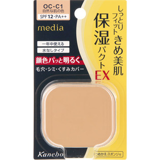
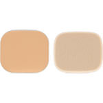

返回列表
产品名称：メディア モイストフィットパクトＥＸ ＜つめかえ用＞

カネボウ化粧品 メディア モイストフィットパクトＥＸ ＜つめかえ用＞ ＯＣＣ１
メーカー カネボウ化粧品
JANコード 4973167243954
商品の特徴
しっとりフィット きめ美肌
保湿パクトＥＸ
- 成分・分量
- 【成分】
マイカ、タルク、炭酸Ｃａ、ミネラルオイル、ジメチコン、ポリメタクリル酸メチル、ヒドロキシステアリン酸エチルヘキシル、ジカプリル酸ＰＧ、シルク、パーフルオロオクチルトリエトキシシラン、ワセリン、水酸化Ａｌ、ジフェニルシロキシフェニルトリメチコン、ミリスチン酸亜鉛、含水シリカ、メチコン、ラウロイルリシン、スクワラン、ミリスチン酸、（ジメチコン／メチコン）コポリマー、ＢＧ、トリイソステアリン酸イソプロピルチタン、ステアレス-６、ラウロイルアスパラギン酸Ｎａ、カンテン、塩化亜鉛、水溶性コラーゲン、加水分解コンキオ
- 用法及び用量
- 【使用方法】
●コンパクトの裏側の小さな穴からピン先などで使い終えた中皿を押して取り出し、新しいファンデーションをセットしてください。